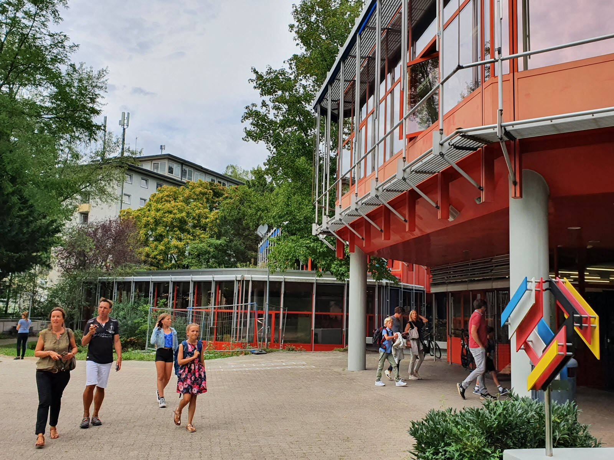
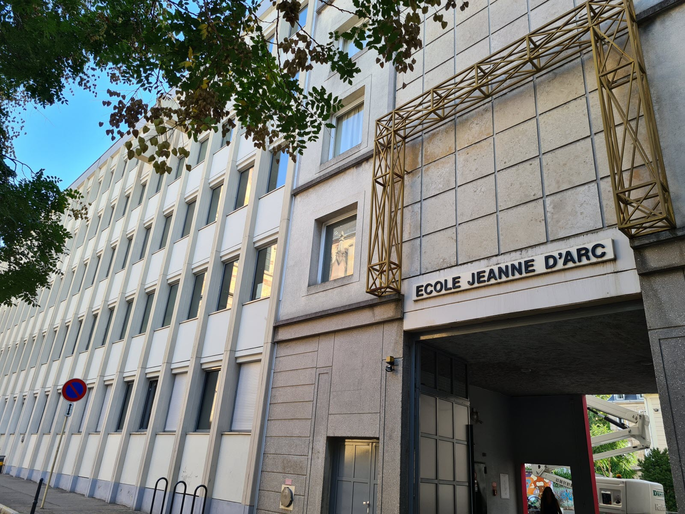
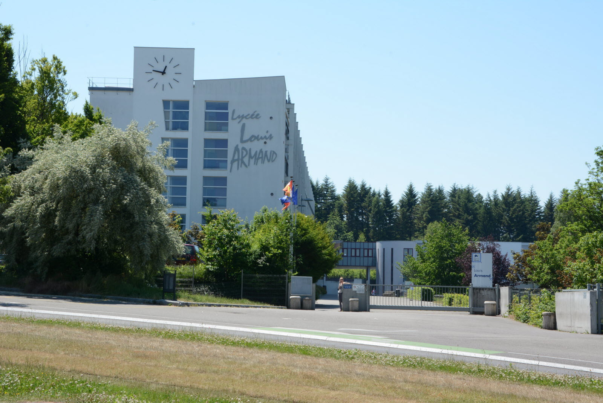
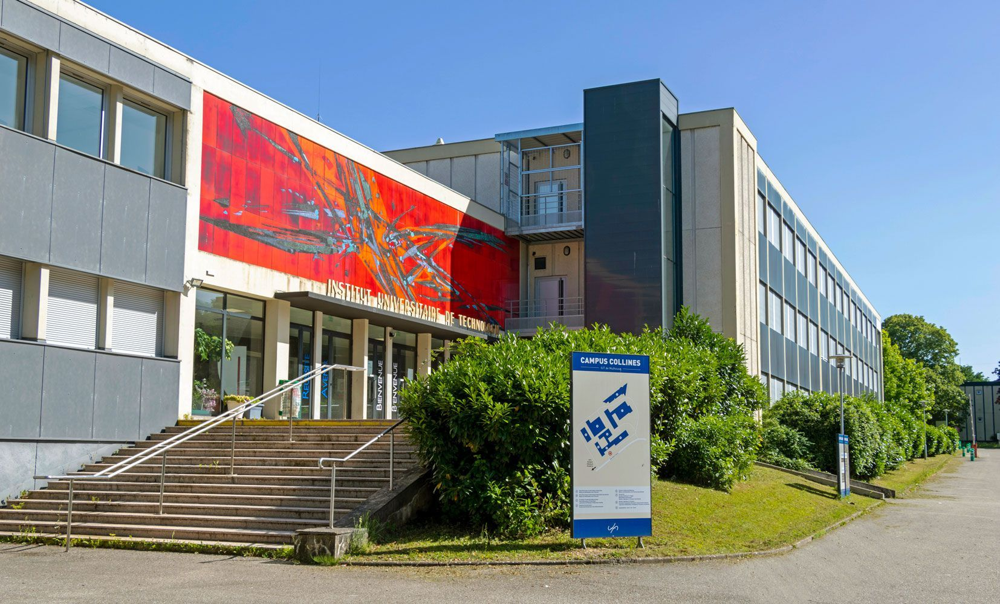

Lycée Franco-Allemand
Le lycée Franco-Allemand se situe en Allemagne, plus précisemment à Freiburg.
Il
existe à ce jour 3 Lycée de ce type dont 2 en France. Cette école m'a fait découvrir des
passions, des activités et des personnes qui me font encore avancer à ce jour. Ce fut une
très
belle expérience et avoir pu bénéficier aussi bien du système Français et Allemand m'a
permis de
développer un côté critique.
Jeanne d'Arc est une école avec laquelle j'ai une affinité pariculière. J'ai fait
ma maternelle et mon école primaire là-bas. Je suis revenu en 3e pour réaliser mon brevet des
collèges puis j'ai quitté à la fin de la seconde.


Une nouvelle personne est né lorsque je suis rentré dans ce lycée. Je ne
m'attendais à rien et
pourtant j'ai été agréablement surpris. Le rythme de travail était tout de même soutenu mais les
cours étaient intéréssants. Les professeurs étaient à l'écoute et toujours l'envie d'enseigner
L'IUT est une école que j'apprécie énormément. Cela relie 3 points que
je voulais aiguiser. Le côté marketing pour espérer un jour
ouvrir ma propre entreprise ! Le côté digital, apprendre à utiliser les outils d'une autre façon
et me rendre unique. Puis finalement le code, je trouve fascinant de pouvoir créer en partant de
rien.
